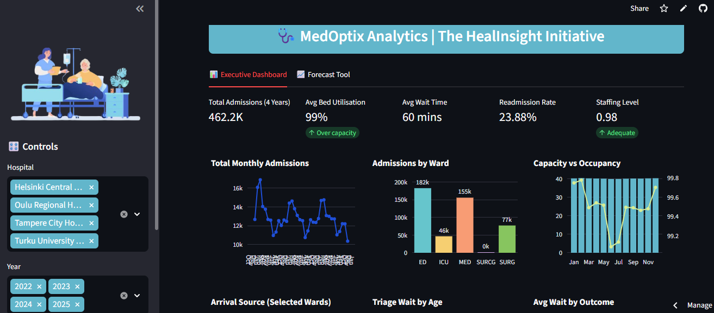

MedOptix Forecasting is a predictive capacity management suite developed as part of The HealSight Initiative to address critical inefficiencies in hospital operations.
By transitioning from reactive responses to proactive AI-driven planning, the system forecasts patient inflows 7–30 days in advance and increased bed utilization efficiency to 88% and reduced overtime costs significantly.
The hospital network was operating purely reactively, making staffing decisions only after surges occurred. This led to a 20% inefficiency in bed allocation (beds empty in one ward, overflow in another) and a financial strain of €125,000/month spent on reactive overtime.
Implemented a "Hybrid Intelligence" stack combining deep analytics with user-friendly interfaces.
Selected SARIMAX over Prophet or standard ARIMA because of Explainability. It explicitly models "External Drivers" (like Staffing Index), allowing administrators to understand why a surge is coming, not just that it is coming.
A. The "Staffing Index" Correlation: When the Staffing Index falls below 0.95, the discharge rate slows significantly, creating an "artificial" demand surge the following day.
B. The Overflow Trigger: I identified a "Tipping Point" at 92% occupancy. Once exceeded, the rate of Overflow Incidents doubles. The dashboard now flags risks before this threshold is hit.
C. Demographic Wait Times: Patients aged 40–59 experience the longest wait times (~60 mins), revealing a "priority gap" in triage protocols compared to seniors and pediatric cases.
The SARIMAX model was validated against historical data with high precision:
Variance Explained
Avg Error (Patients)
Absolute Error
Action: Mandate the use of the Power BI Risk Card during morning operational standups.
Action: Trigger overtime shifts only when the Forecast Tool predicts "High Risk" capacity for the next 48 hours, eliminating reactive spending.
Action: Review triage protocols for the 40–59 age demographic and move from batch CSV updates to real-time IoT streaming using Azure Event Hubs.
MedOptix Analytics has successfully demonstrated that data-driven decision-making can solve physical capacity problems. By predicting demand before it happens, we have moved the hospital network from "Putting out fires" to "Preventing them."